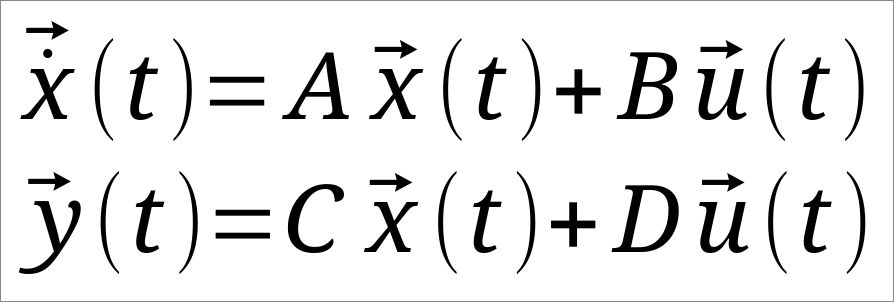
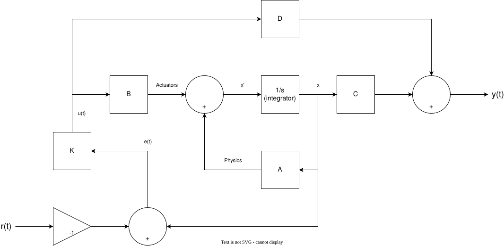
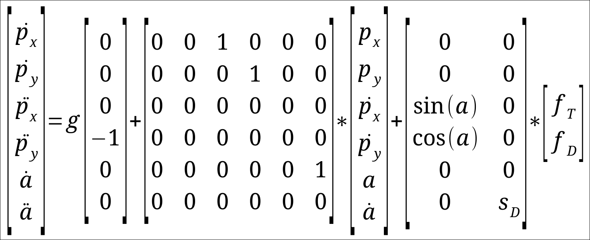
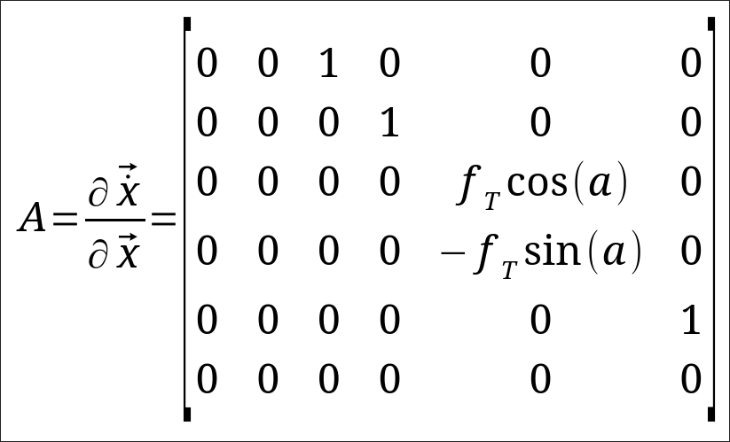
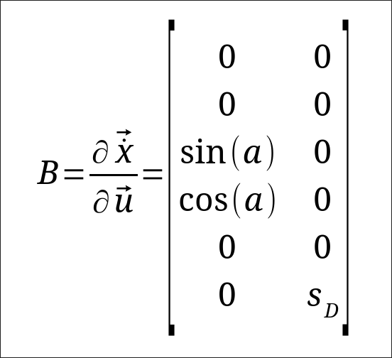
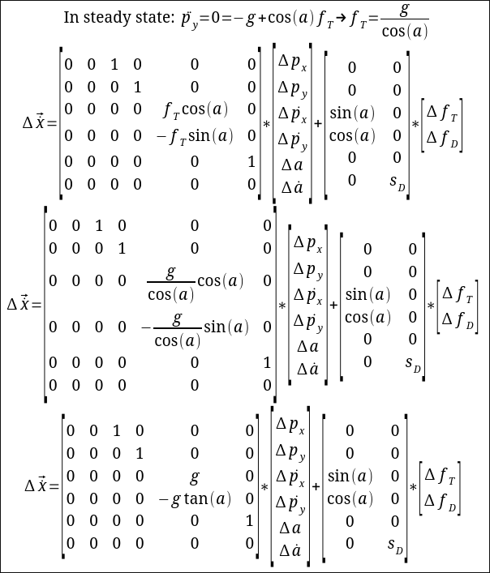

| Rev | Date | Description |
|---|---|---|
| 1 | Corrected notation in equations |
This week, I worked on making a drone simulator in JavaScript to test out a simple LQR controller. To keep it simple, this drone is two dimensional.
To make the controller, I started by drawing out the control system, which basically shows how my state evolves over time and how I control the system. Here, x is my state, y is the output, r is the reference (or target), u is the control input, and e is the error. The A matrix describes how my state affects the dynamics, and B describes how my input affects the dynamics. C and D show how my state and inputs affect the output. Note that by definition, x=∫ẋ+x0.


In this case, I can set C to I and D to 0, since I care about the state directly, not that those matrices affect much anyways. Next, its time for the state equations, which is where we write out the ODEs for how the system evolves over time. Here, we start by defining the state vector x, which includes the x and y position, x and y velocity, angle, and angular velocity. Then, we define the input, which is total thrust and differential thrust. Finally, we write equations relating the change in state in terms of the state and input. In this case, we have overlap between the state and change in state (velocity is a state, but it is also equal to the change in position, which is also a state). This gives us an A matrix with three rows of just a 1. Additionally, the angle doesn't directly affect the velocity or acceleration, so those rows are 0. For the B matrix, we see that total thrust affects the vertical and horizontal accelerations, depending on the angle. Finally, the angular velocity is affected by the differential thrust, but to keep it general, we use a constant sD, which is just the distance from the center of the drone to the thruster (sD stands for differential scaler). It should be noted that the other measurements are in units of meters, seconds, and degrees.

Next, we find the Jacobian of ẋ with respect to the state vector x and input vector u. All this means is linearizing ẋ, then taking the derivative of ẋ with respect to each element of the vector (in this case the state vector x), then sum them and multiply by a change in that element. This is pretty easy here since each row only has one non-zero element, so it ends up being unchanged. For the sin(a) and cos(a) terms in the second matrix, we linearize along an unknown point, a0. This can be done by multiplying the change in a by the slope, which happens to be the derivative of the function evaluated at a0, except we don't know what a0 is yet (later on, we will use many values for a0 to improve the controller, but for the first iteration, we will use 0). Finally, we can move everything into the same matrix. This gives us A.

Then, same thing for u, giving us B, except we completely ignore the ẋ component since they're all constant (i.e. no fT or fD components).

Finally, we replace fT in the A matrix so that the drone stays level. By setting it to 9.8/cos(a), we are telling the system that we need to make sure that the vertical component of the thrust is enough to counter gravity. One important issue to notice here is that as our angle deviates from 0, we approach infinite total thrust and 0 authority over vertical acceleration, and the system becomes less controllable (i.e. we cannot calculate a K matrix at 90 degrees). Instead, I will probably start blending the controller with a linear or step controller to avoid going past 75°. The only reason to pass this limit, as far as I can tell, is for freestyle acrobatics (like doing loops), so we don't generally care about this range anyways.

Now that we have the A and B matrices, its time to talk about how to find K. This is the easiest part of this project, we give it to a solver, which solves the algebraic ricotti equations. It does some magic to convert A and B into K, with some tunable parameters in the Q and R matrices. Q and R are cost matrices, which tell us how expensive a certain parameter is. Q is the cost of an error on x, while R is the cost of using a control u. In this case, I just used I for both, since I want to get the controller working first, tuning can happen later. In particular, applying a higher cost to fT can tell the system to use less throttle, which can potentially save battery if we don't need it to approach the destination as quickly.
I used a simple octave script to generate my k matrix. The plan is for the drone to be 2kg, have 0.2kg*m2 of inertia, and have 0.5m between the center of mass and the props, so the sD factor is 0.2/0.5=2.5. For linear dimensions, I will normalize for acceleration, so we don't have to worry about mass in the controller.